配置本地后端环境wamp(PHP+Apache+MySQL)+memcache+rewrite vhost（我的机子是win7_64位系统）
首先，第一步下载一个wampserver2.2(不要下载2.4或者2.5这些高版本,不然以后你想用手机端调试用速度会超慢的)，下载好以后安装在如下路径:D:\Program Files (x86),然后下载我已经配置好的文件，打开，进入到如下画面。
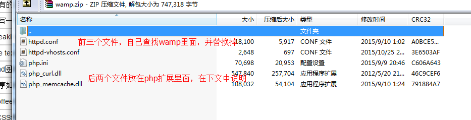后两个文件放在：D:\Program Files (x86)\wamp\bin\php\php5.4.3\ext的路径，然后查看你的本机ip
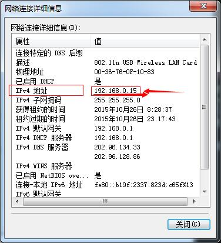然后重启wampserver，直到显示 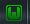,如果你的图标是黄色或者红色，就是说名Apache或者MySQL没有成功开启，如果是Apache没成功开启，可能是80端口被占用，打开控制面板，服务，里面关闭那个占用80端口的服务，然后在开启Apache就可以了，还剩下最后两个步骤，一个是打开你刚才复制进去的httpd-vhosts.conf文件，
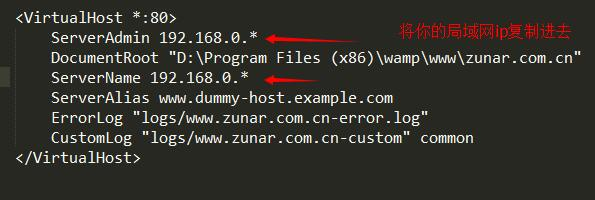the last step,我勾上的那些全部要勾上。最上面还有一个php_curl要勾上。
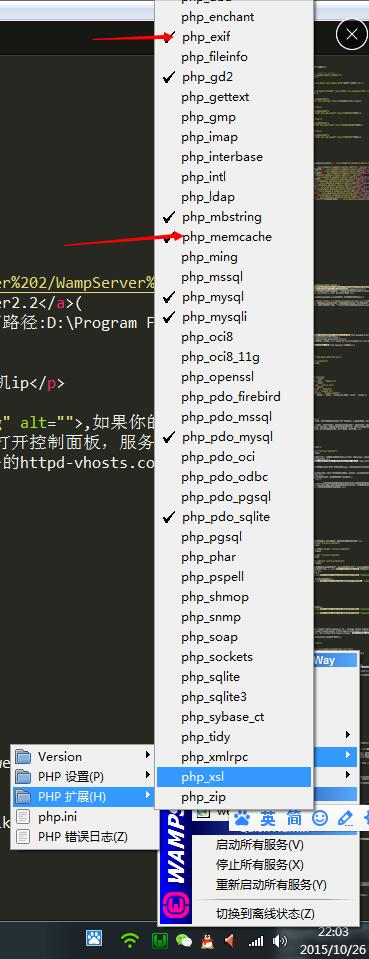最后打开C:\Windows\System32\drivers\etc的hosts文件，在里面加上一句话127.0.0.1 www.zunar.com.cn，就大功告成啦。本地环境已经配置好了。，如果你是32位的系统，请下载32位的wampserver，然后php_memcache.dll文件也要下载对应的32位文件。
Font-Awesome图标字体
首先下载Font Awesome4.3.0,然后把文件解压，放在你的项目目录下，并且在html文件中加入下面一段话
<link rel="stylesheet" href="font-awesome/css/font-awesome.min.css">
然后你就可以试着练练手拉，比如说：<i class="fa fa-shirtsinbulk"></i> 等于
具体内容可以去Font Awesome里面看~
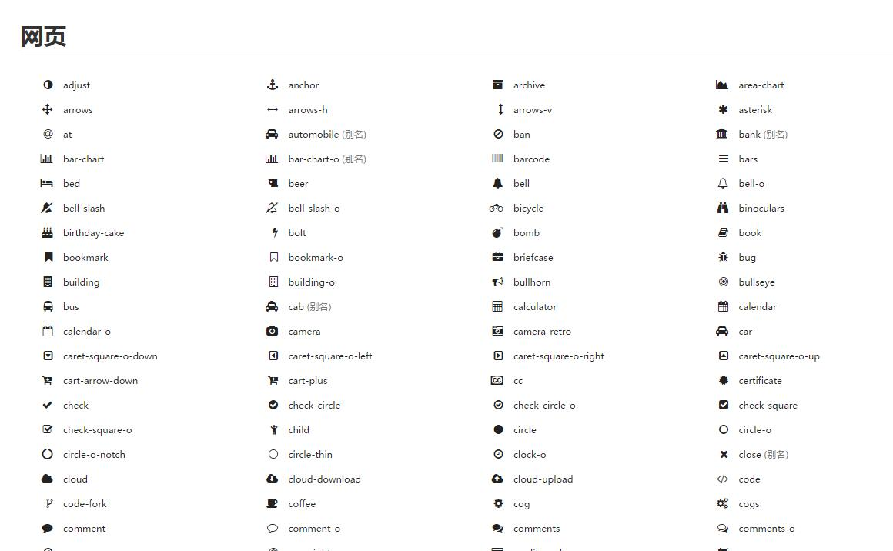检测是手机端访问本页面还是pc端
先来一首安静的音乐
然而我暂时还不会写，先放一放
为什么有的人觉得很懂他（她）2015/10/24
用你的心去体会对方的心，多聆听，关于动作模仿，当然不是指的真的去做一模一样的动作，心里暗自模范，去体会着别人的心境
为什么有的人不会聊天，很多时候我们陷入一个误区，认为不会聊天，肯定是话的内容说错了，我想说的是，语言只能表达10%的意思，语气表达出40%的意思，肢体语言表达出50%的意思，说话时候，注意自己的语气是否过于冷淡，为什么你说话的语气总是那么的生硬，说话要带有丰富的情感，这样别人才能喜欢听你说话，关于肢体语言的训练，这个比较难，我还不懂。
如何去写一个侧边栏滚动动态监听 2015/10/24
先来一首安静的音乐
首先，demo已经写出来了，就在左边，然后就是第一步了，你需要先写静态的html+css代码，用position：fixed将他固定在屏幕左边，然后引入jquery。将下面这段复制到你的代码title的下面，
<script src="http://1.pengliheng.sinaapp.com/mywy/jQuery-1.10.2/jquery-1.10.2.min.js" type="text/javascript"></script>
然后你就可以开始写jquery代码了，第一步，固定在屏幕上的那个添加一排有规律的class，用来动态监听你点击的到底是第几个class，
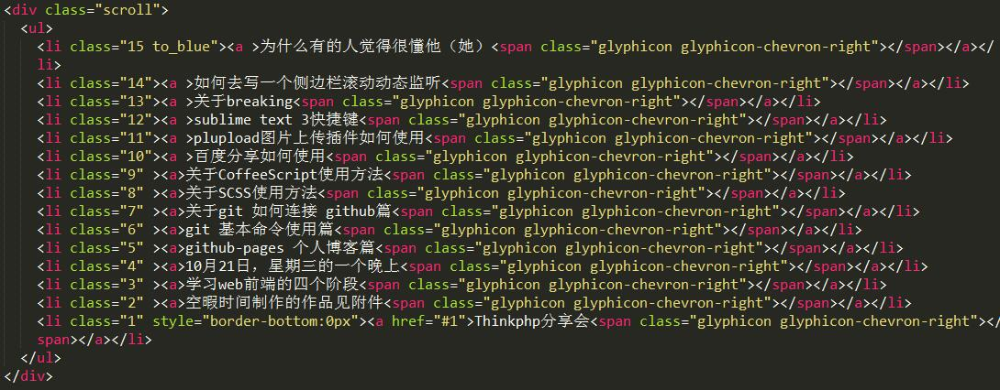然后给你的每一篇内容，也就是那个需要跳转到的div元素，添加一排有规律的id属性，如1到15，总之就是与侧边栏的class属性相对于，之所以弄成1~15是为了将来用for循环更加方便。
那么接下来就可以写jquery代码了，首先写如何让点击侧边栏，自动跳转到某个div元素
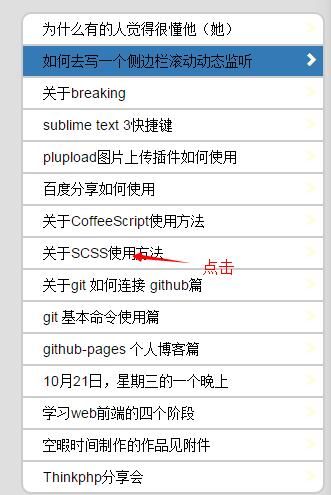 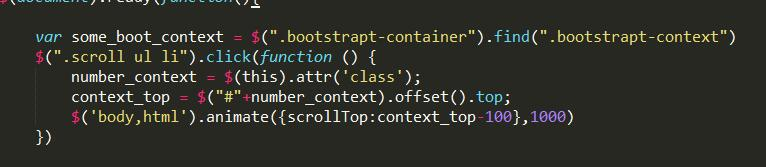$("#"+number_context).offset().top; ,,,,,,,,,,,,,这段代码的意思就是获取当前选中的div元素到页面顶部的距离，
$('body,html').animate({scrollTop:context_top-100},1000),这段代码的意思是在1秒时间内，让屏幕滚动到指定的高度，用这段代码，很巧妙的获取的当前点击的div元素的属性，从而动态获取某篇文章的高度。
关于breaking 2015/10/24
可以点开下面的音乐来试一试感觉，如果你对音乐有感觉。那么恭喜你，跳街舞是你最明智的选择！
breaking,作为一门街舞，相当之流行，bboy也就是跳breaking的男孩子，bgirl跳街舞的女孩子，breaking需要身体素质好，是一种力量型的街舞，当然，跳起来也相当之爽,这个网站做的十分好：街舞后院，黑仔大师在里面不断更新，学习街舞可以去里面。
那么接下来，介绍舞步，六步：如下视频所示
六步是基础，练好六步很关键，如果觉得累，可以练习基础舞步
那么接下来分享几段十分经典的国外breaking教程
亲，请问你学会了嘛？
sublime text 3快捷键 2015/10/23
首先安装插件，按住ctrl+~，粘贴下面这一段
import urllib.request,os; pf = 'Package Control.sublime-package'; ipp = sublime.installed_packages_path(); urllib.request.install_opener( urllib.request.build_opener( urllib.request.ProxyHandler()) ); open(os.path.join(ipp, pf), 'wb').write(urllib.request.urlopen( 'http://sublime.wbond.net/' + pf.replace(' ','%20')).read())
然后按确定，等待几分钟，安装好以后，按住ctrl+shift+p,出现如下图片
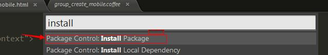输入Emmet,安装Emmet插件
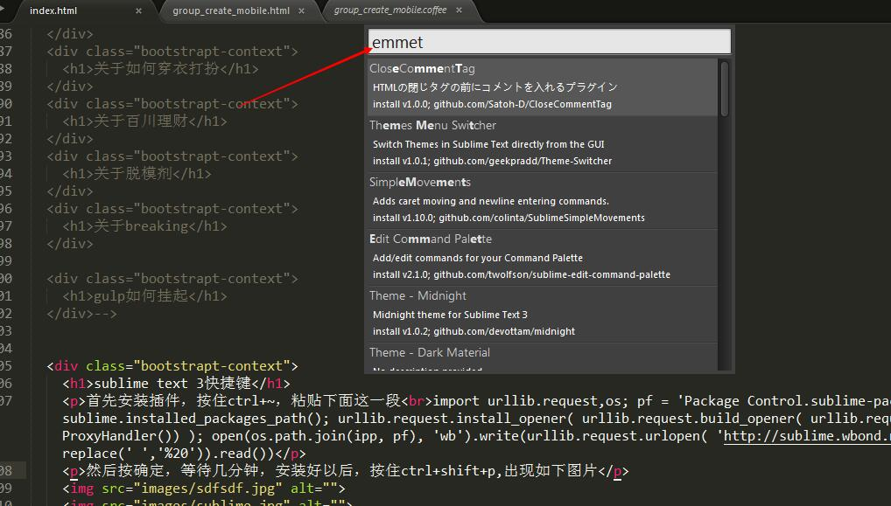接下来出现按照下面的步骤进行
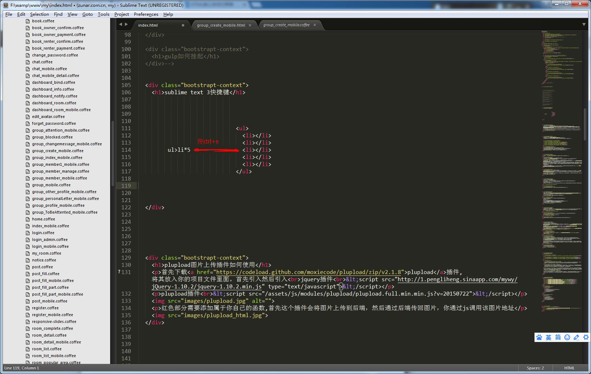输入ul>li*5,,,然后按crtl+e，自动转化成 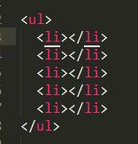
框选一段代码按ctrl+shift+/，便可以更具当前文件自动注释掉当前代码
将一个文件夹，里面装着各种代码的文件拉入sublime text选择框内，则可出现如下图片，十分方便！
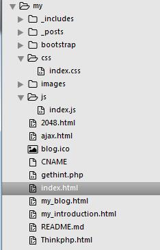plupload图片上传插件如何使用
首先下载plupload插件,将其放入你的项目文件里面。首先引入然后引入
jquery插件
<script src="http://1.pengliheng.sinaapp.com/mywy/jQuery-1.10.2/jquery-1.10.2.min.js" type="text/javascript"></script>
plupload插件
<script src="/assets/js/modules/plupload/plupload.full.min.min.js?v=20150722"></script>
红色部分需要添加属于你自己的函数,首先这个插件会将图片上传到后端，然后通过后端传回图片，你通过js调用该图片地址
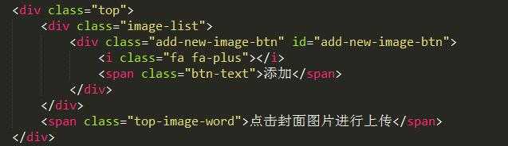百度分享如何使用，为你导入更多流量
首先打开百度分享，点击直接复制代码，然后打开你的编辑器，直接粘贴，即可在网页中见到效果，步骤如下图：
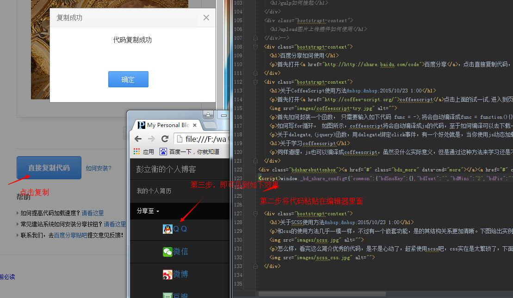 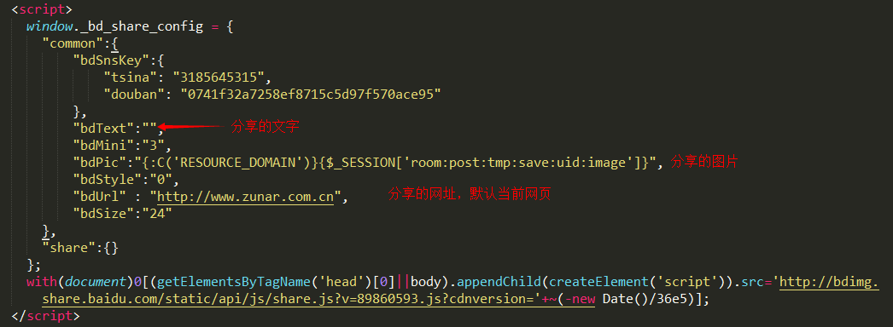bdtext指的就是所需要分享的文字内容，默认的是title里面的内容
bdPic指的就是所需要分享的图片，默认的是当前页面的图片，当然也可以指定图片地址。
bdUrl指的是分享的页面，默认指定当前页面，当然也可以指定其他页面。
bdSize指的是分享图标的大小，3种尺寸，16,24,32。分别对应大中小尺寸。
bdPic，，，导入流量，百度封装好的函数租，任意调用，虽然说，with不是很好！
关于CoffeeScript使用方法 2015/10/23 1:00
首先打开coffeescript点击上面的试一试,进入到页面如下图所示
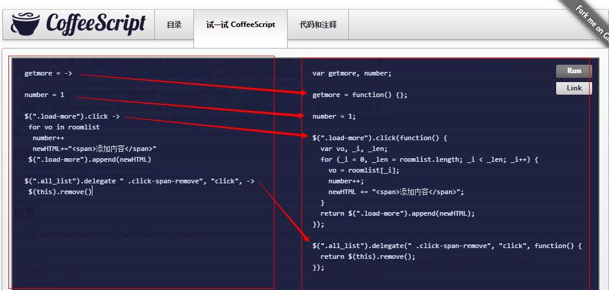首先如何封装一个函数， 只需要输入如下代码 func = ->,将会自动编译成func = function(){}
如何写for循环， 如图所示，coffeescript将会自动编译成js的代码，至于如何编译可以去下载一个koala,里面自带编译coffeescript，以及scss
关于delegate,(jquery)函数，用delegate绑定click事件，有一个好处就是，当你使用js动态加载出的div，或者其他元素，你想给他们增加绑定事件，这个时候就需要用到delegate了，delegate可以将新添加的div元素也让他们绑定click事件，最好不要使用live，因为在更高版本的jquery中，取消了live。同样道理，coffeescirpt编译成的js代码进过了压缩及优化，大大减小了代码所占内存，大大优化了js加载速度
关于学习coffeescript
同样道理，js也可以编译成coffeescript，虽然没什么实际意义，但是通过这种方法来学习还是不错滴，网站：js转coffeescript
关于SCSS使用方法 2015/10/23 1:00
和css的使用方法几乎一模一样，不过有一个嵌套功能，是的其结构关系更加清晰。下图给出实例，同样可以使用koala来进行编译，使其成为压缩的css代码，更加节省内存，更加优化加载速度。
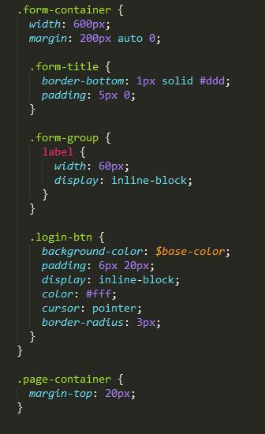怎么样，看完这么简介优秀的代码，是不是心动了，赶紧使用scss吧，css实在是太繁琐了，下面展示两种代码的对比图，怎么样，是不是觉得css弱爆了，而且很难看懂！
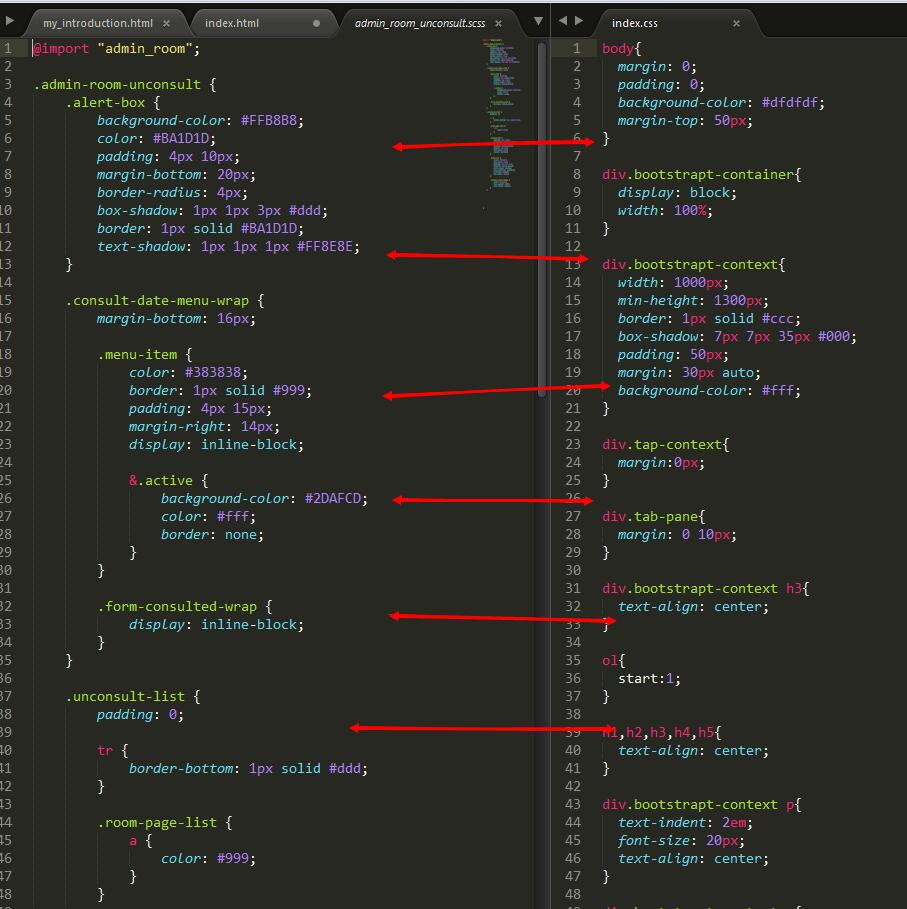关于git 如何连接 github篇
$ cd ~/.ssh //检查计算机ssh密钥
如果没有提示:No such file or directory 说明你不是第一次使用git,执行下面的操作,清理原有ssh密钥
$ ssh-keygen -t rsa -C "your_email@youremail.com"
创建一个新的ssh key
然后会在 .ssh 目录生产两个文件：id_rsa和id_rsa.pub,打开id_rsa.pub，将里面内容复制到github的key里面，具体步骤如下图


当即可成功用git链接github了，并且可以成功push你的代码到github上面了！
git 基本命令使用篇
首先，下载git，接着安装,然后新建你的项目文件，进入文件里面，鼠标右键“Git Bash Here”,接着出现以下画面
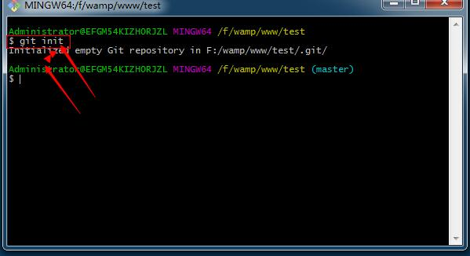输入git init，新建仓库，也可以clone本地仓库，或者远程仓库
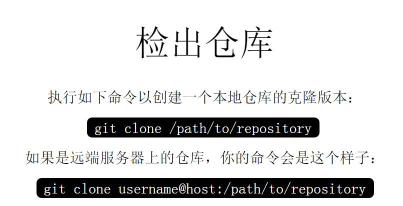当然，大多数情况是白纸一张，什么也没有，这时候在本地创建好文件
然后输入以下命令
git add .
git commit -am "10/22"
git push https://github.com/pengliheng/username.github.io.git master。
这里的地址照着复制，由下图说明，master的话照着输入
然后输入你的用户名，密码即可成功push上你的github仓库
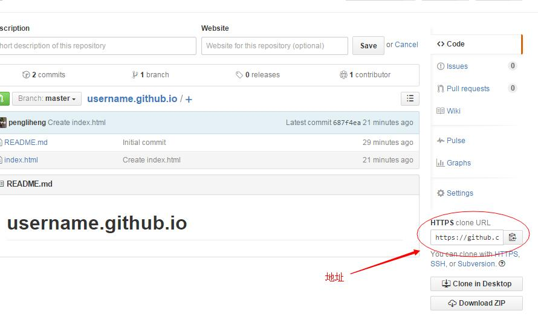github-pages 个人博客篇
首先说明，为什么要用github，这个上面的源码全部是公开的，源码一目了然，其二，牛逼的人都在这个网站上开发自己的源码。那么闲话也不多说了，第一步，打开github注册一个帐号，建议用谷歌邮箱注册
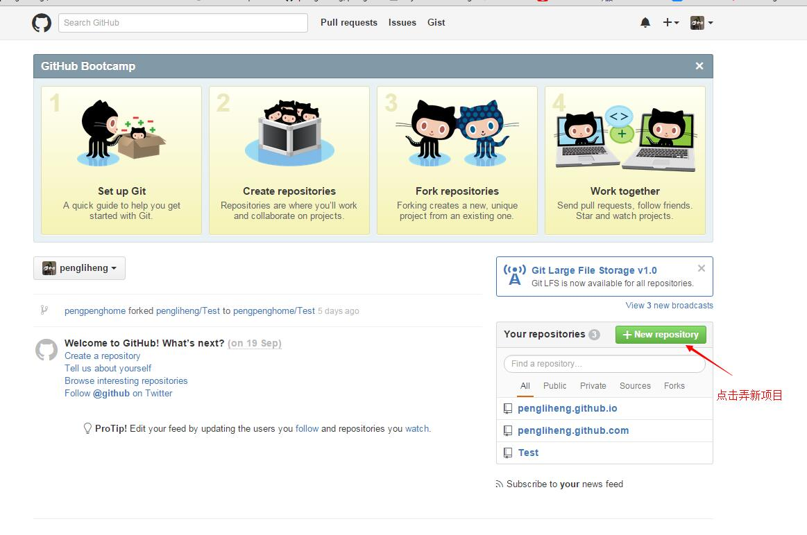 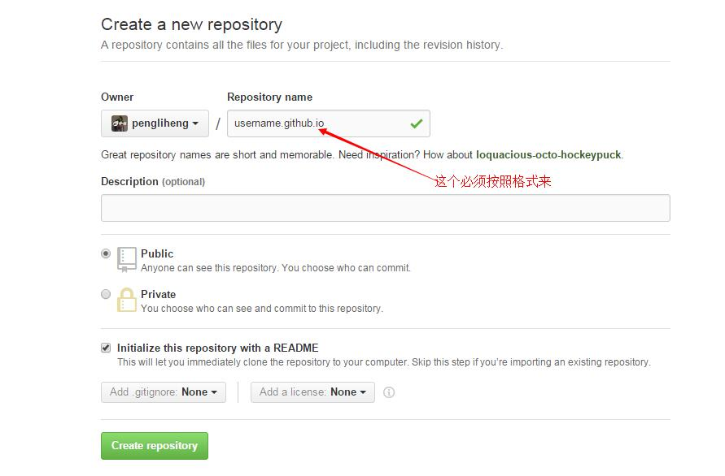Repository name的命名方式必须按照：usernamne.github.io的形式来命名，username用你自己喜欢的网址
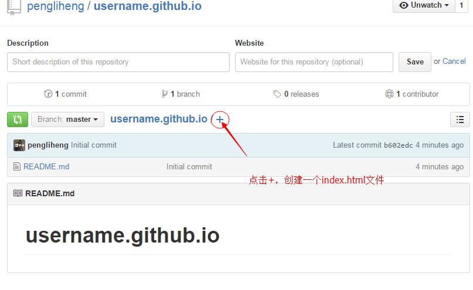接下来就可以进入到一个这样的页面，点击+进入
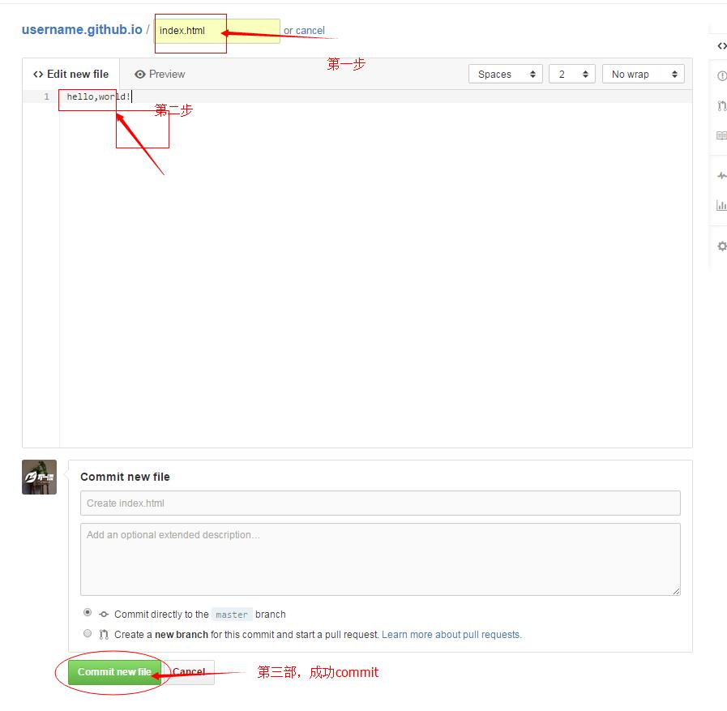最后在浏览器输入username.github.io,即可访问你的github个人博客，看到helloworld！
10月21日，星期三的一个晚上
关于github-pages的个人博客的如何上线
经历了几天晚上的奋斗终于成功上线了我的个人博客，闲话不多说
下面放上我的
源码地址 个人域名
首先要有自己的个人域名，在阿里云服务器上购买一个个人域名
阿里云域名购买
类似一排排域名购买，花一个8元足够买一个pengliheng.xyz的域名，当你购买以后,可以点击
域名管理
进入下面的页面。
记得一定要修改成一样的内容。接下来，首先打开DNSPOD，接着注册一个帐号
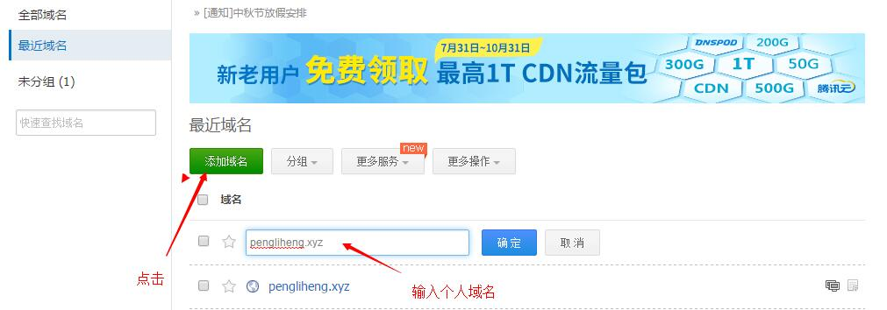点击你的域名进入到下面的图片
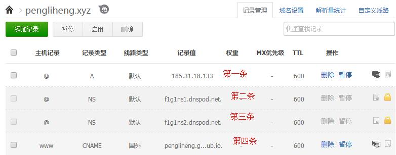看到下面有四条记录，中间两条是自带的，前篇内容在aliyun弄过了，就是为了让aliyun的域名管理转到DNSPOD里面
第一条：记录值里面的ip值是通过cmd获取的，这首先需要你用注册一个github个人帐号，然后获取你的github个人二级域名，pengliheng.github.io类似于我这种(在后面篇幅会详细介绍如何弄自己的github-pages，github二级域名)，下面打开你本定的cmd文件
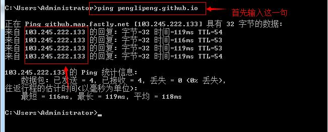将输入后获取的红色框内的ip地址放到dnspod里面的第一条的记录值里面，第二条，第三条是自带的，不需要弄，第四条需要设置，记录值是自己github个人博客的网址，接下来需要在自己的项目里面放入一个CNAME的文件，不带后缀的，然后记事本打开文件，在里面输入你的个人域名
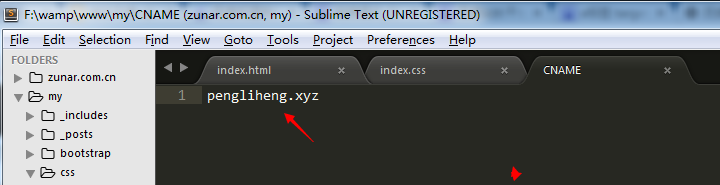CNAME文件放在项目的根目录上面
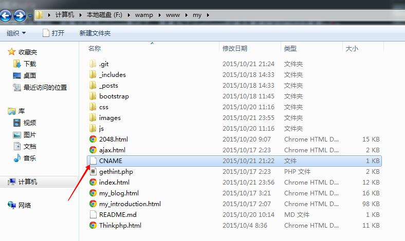就这样，个人域名的指向终于搞成了，
学习web前端的四个阶段
空暇时间制作的作品见附件
Thinkphp分享会
- think安装
- think目录下的文件及文件夹分别代表的含义
- Volist循环标签使用方法
- Foreach循环标签使用方法
- IF标签使用方法
github-pages
- 个人博客的必要性
- github帐号注册
- git的使用方法及代码上传
- github-pages的优点及缺点
- 个人域名及博客的上线